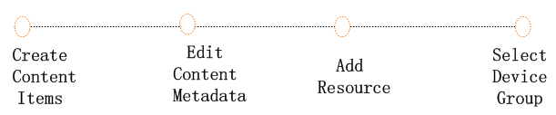
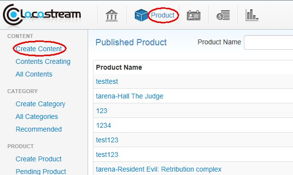
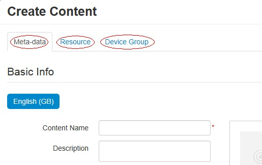
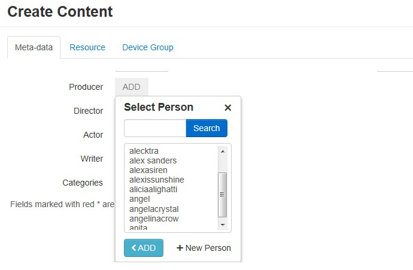

Help
Content Management
-
How to create content? There are simply four steps:
1. create content items;
2. edit content metadata;
3. select the resource which contained by the content;
4. select device group.
The following depicts the steps to create content:


1. Create Content Items. From the page of the Product and click the Create Content button;
2. From the page of the Edit Content, click Meta Data and add content metadata;

a) Input basic content information such as: content name (not null), content description, content thumbnail;
b) Input advanced content information such as: film rating, producer, actor, writer and content copyright information;
c) Select content's category, content can be assigned to one or more categories at the same time. After editing content metadata, click next.
3. From the page of Resource, one content can package one or more resources and it's supported to search the published resource according to the resource name. Click button in to add the selected resource into content. If click button out, the resource will be removed from content. After adding resource click Next;
4. From the page of Device group, select device group listed, click button Save & Closed, and finish creating content. All contents that have been created would be listed in All Contents, if during the process to create content, the subscriber didn't click Save & Closed, the unfinished content would be listed in Content Creating.
Content Management System (CMS) is a functional module that is designed to create, delete and edit content as well as maintenance from a central interface. CMS allows users to centralize data creating, editing and modification on a single back-end interface.
1. Create Content-
2. Delete Content
-
The unfinished content can be deleted completely, and the finished content only to update its status while deleting. Once you delete the content, it cannot be recovered. If a content added to the product is on shelf, then the content is not allowed to be deleted. You must be careful while deleting content.
1. Delete an unfinished content: from the page of Contents Creating, select the content, and click Delete;
If you want to delete multiple contents at the same time, from the page of Contents Creating, select multiple contents and click Delete on the right top of the page.
2. Delete a finished content: from the page of All Contents, select the content, and click Delete;
If you want to delete multiple contents had been finished, from the page of All Contents, select multiple contents and click Delete on the right top of the page.
-
3. Edit Content
-
Both unfinished and finished content are allowed to be edited, but deleted content cannot be edited.
1. Edit an unfinished content, from the page of Contents Creating, select the content, and click Edit.
2. Edit a finished content, from the page of All Contents, select the content, and click Edit.
-
4. Person Management
-
The metadata relative to person means producer, director, actor, writer etc. All these are managed through Person Management module, you can search a specify person or create a new person in person management module.
